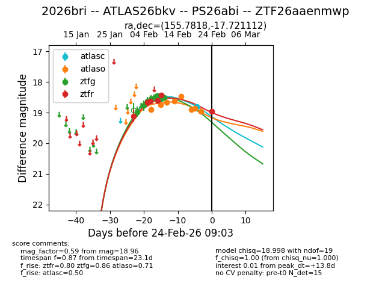
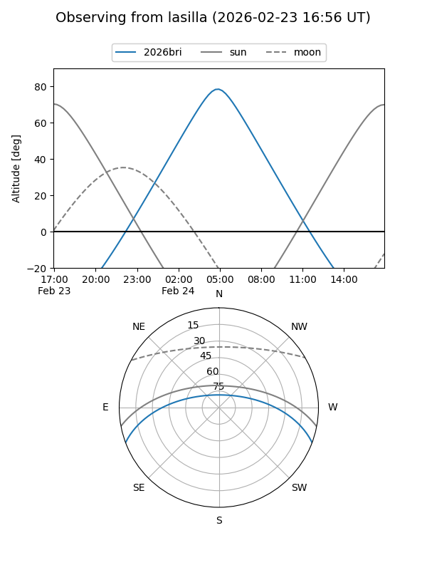
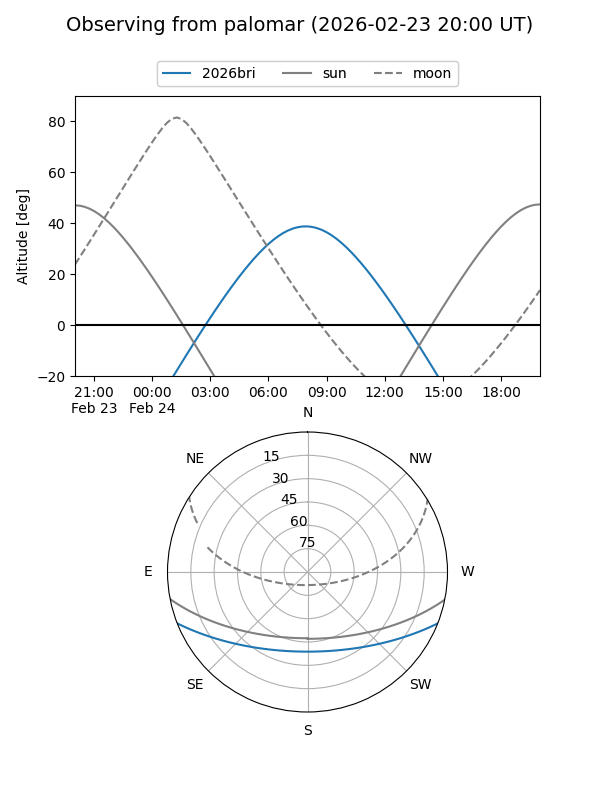
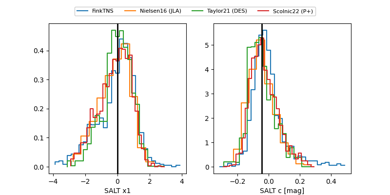

2026bri
Target 2026bri at 2026-02-24 09:08
Aliases and brokers:
FINK: link
Lasair: link
ALeRCE: link
TNS: link
YSE: link
alt names
ZTF26aaenmwp (ztf,fink_ztf)
2026bri (tns,yse)
ATLAS26bkv (atlas)
PS26abi (panstarrs)
Coordinates:
equatorial (ra, dec) = 155.7818,-17.72111
equatorial (HMS+DMS) = 10:23:07.64,-17:43:16.00
galactic (l, b) = (260.0051,+32.51789)
Flags:
Photometry:
last atlasc=18.81, atlaso=18.96, ztfg=18.50, ztfr=18.96
1 atlasc, 8 atlaso, 8 ztfg, 6 ztfr detections
Lightcurve

Visibility


Additional plots
